ProPresenter gebruik je straks elke week. Dit handboek is opgedeeld in 6 blokken die je in volgorde kunt doorwerken — je bepaalt zelf het tempo. Alles is opgedeeld in 6 duidelijke blokken die je in volgorde kunt doorwerken.
Intro & Het Lagen-Concept
Het mentale model van "glazen platen" waar alles op rust
Schermen & De ProPresenter UI
Waar het beeld heengaat en hoe je door het programma navigeert
WorshipTools Planning Integratie
De "Source of Truth" voor de zondag
Setlist Bouwen & Bewerken
Liederen importeren, splitsen en stylen
Besturing: Live de dienst draaien
Shortcuts en rust bewaren bij fouten
Achter de Schermen (De Magie)
Hoge overvlieger: Looks, Macros & Stream Deck
Intro & Het Lagen-Concept
ProPresenter is niet net als PowerPoint. Het is een krachtige multi-screen media-engine, speciaal gebouwd voor kerken om video, audio en live-teksten naadloos te combineren tijdens een dienst.
In plaats van één presentatie die van slide naar slide gaat, denk je in lagen die je onafhankelijk van elkaar kunt aan- en uitzetten. Dat geeft je de flexibiliteit om ter plekke te reageren op wat er in de dienst gebeurt.
ProPresenter werkt als een stapel doorzichtige glazen platen die op elkaar liggen. Wat bovenop ligt, dekt de onderliggende laag af. Door een laag te wissen, blijft de rest eronder gewoon zichtbaar. Welke lagen je per scherm ziet, bepaal je in het Looks window (Screens → Edit Looks). Audio zit hier niet bij — audio is een aparte uitgang, geen visuele laag.

Schermen & De ProPresenter UI
Het scherm van ProPresenter is opgedeeld in drie hoofdgebieden. Leer ze herkennen — dan weet je altijd waar je moet klikken.
Dit is een echte ProPresenter-sessie van onze kerk. Hieronder zie je het scherm zoals het er straks bij jou ook uitziet — dezelfde knoppen op dezelfde plekken. De drie zones die je net leerde, worden hieronder in tekst uitgelegd.
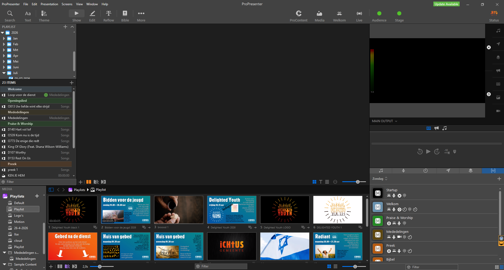
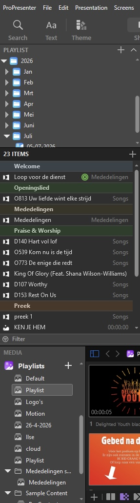
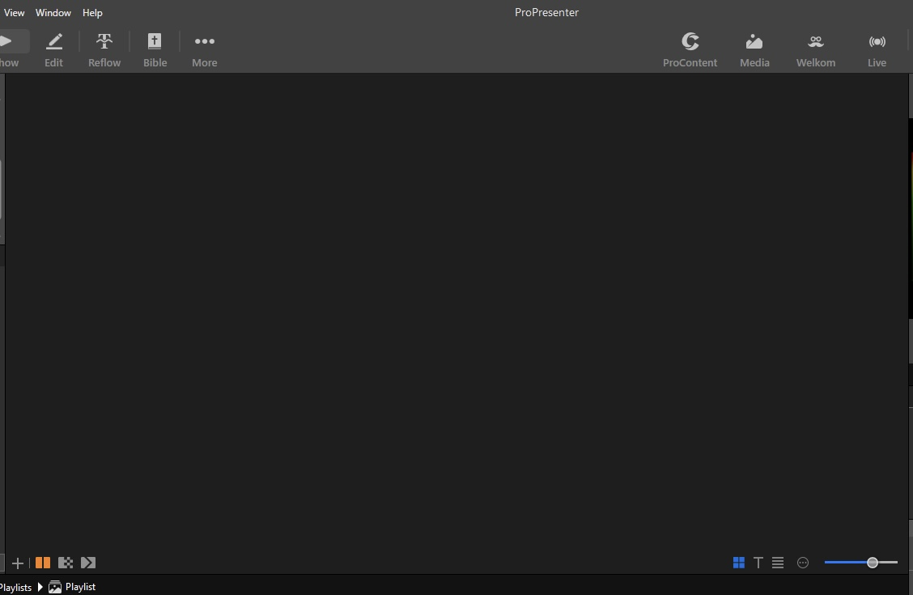
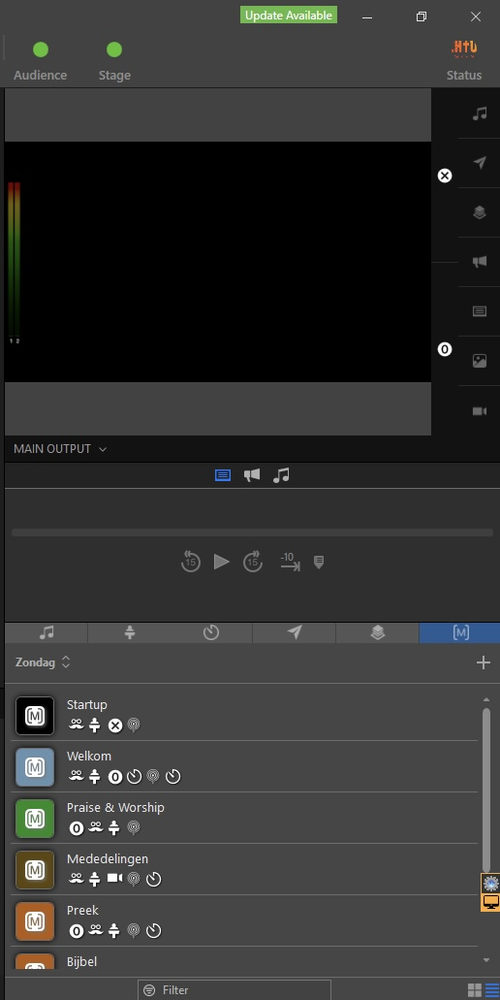
Zoom eens in op de Toolbar helemaal bovenaan:
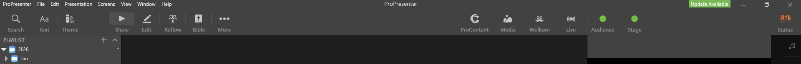
Bovenaan in de Toolbar zie je verder van links naar rechts:
- 🔍 Search, Text en Theme — Om razendsnel content of liederen op te zoeken en de visuele stijl aan te passen.
- 🖥️ Modi-knoppen (Show, Edit, Reflow, Bible) — Hiermee schakel je tussen het live-scherm (Show), de grafische editor (Edit), de tekst-editor (Reflow) en de Bijbelmodule.
- 🎨 Snelkoppelingen (ProContent, Media, Looks) — Directe toegang tot de media-bibliotheken en specifieke looks instellingen.
- 🟢 Audience & Stage Status — De groene indicatoren die aangeven dat de zaalschermen en het podiumscherm live en actief verbonden zijn.
ProPresenter stuurt drie verschillende beelden tegelijk uit — één voor elke doelgroep in en rondom de kerk.
WorshipTools Planning
Alles wat we in ProPresenter qua liederen klaarzetten, is gebaseerd op dít schema. Hier vind je de exacte selectie van de liederen voor de dienst en zie je welke rollen er aan het team zijn toegewezen.
We importeren niet rechtstreeks vanuit WorshipTools naar ProPresenter. In plaats daarvan bekijk je de geplande songs in WT Planning en zoek of bouw je deze handmatig op in je ProPresenter playlist. ProPresenter doet dit namelijk niet zelf; jij als operator zorgt voor de juiste vertaalslag.
Open WorshipTools Planning
Open dit in een browsertabblad of via de app op je telefoon om het overzicht bij de hand te hebben.
Selecteer de juiste datum
Kies de specifieke zondag die je gaat voorbereiden om de definitieve songlijst van die dienst te bekijken.
Loop de liederen door
Neem de lijst met songs door en controleer welke specifieke nummers er gezongen gaan worden tijdens de dienst.
Zoek gericht met D-, O- of K-nummers
Maak gebruik van de D-, O- en K-nummers in WorshipTools om liederen snel en foutloos terug te vinden in onze bibliotheek. Zijn er meerdere liederen met exact dezelfde naam? Gebruik dan het CCLI-nummer als controle; dit nummer is uniek en specifiek aan één vastgesteld lied toegewezen.
Een Setlist Bouwen & Bewerken
Een playlist is jouw "script" voor de dienst. Wij werken altijd met templates zodat elk dienst-onderdeel meteen op de juiste plek staat — zo hoef je niet elke keer secties en standaard-onderdelen opnieuw aan te maken. Alles in de playlist wordt in volgorde afgespeeld.
Zoom eens in op het + menuutje bovenaan de Playlists-kolom en de template-lijst die je te zien krijgt:
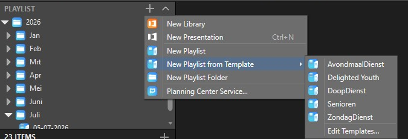
- Klik in de linkerzijbalk op Playlists en zorg dat je de juiste maandmap open hebt staan (bijvoorbeeld onder Juli).
- Klik op het +-icoon bovenaan de Playlists-kolom en ga in het menu naar "New Playlist from Template".
- Selecteer het template dat hoort bij de dienst die je voorbereidt uit de lijst (zoals "ZondagDienst", "AvondmaalDienst" of "Delighted Youth"). ProPresenter maakt automatisch een nieuwe playlist aan met de juiste kopstukken er al in (zoals Welkom, Praise & Worship, Mededelingen, Preek).
- De template-naam is nu de tijdelijke naam van je playlist. Hernoem deze direct naar de datum van de dienst in het formaat dd-mm-yyyy (bijv. "05-07-2026"). Klik op de naam, type de juiste datum en druk op Enter.
- Omdat ProPresenter playlists niet automatisch op datum sorteert, sleep je de playlist handmatig naar de juiste maandmap onder het actieve jaar om het overzicht strak te houden.
Welk lied je ook toevoegt: plaats het altijd onder de juiste sectie-kop van je template (bijvoorbeeld onder Openingslied, Praise & Worship of Eindlied). Sleep het lied dus niet willekeurig ergens naartoe, maar positioneer het strak onder de juiste header.
-
Klik linksboven in de Toolbar op de grote 🔍 Search knop.
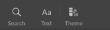
-
Er opent een zoekvenster. Zorg ervoor dat het blauwe ProPresenter-logo onder de zoekbalk is geselecteerd. Hierdoor zoek je lokaal in onze eigen bibliotheek.
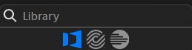
- Typ in de zoekbalk het specifieke D-, O- of K-nummer in dat je vanuit WorshipTools Planning hebt doorgekregen (bijvoorbeeld D003). Dit is de snelste en meest foutloze manier om het juiste lied te vinden.
-
Pak het gevonden lied op en sleep het direct naar de setlist. Laat de muis los onder de gewenste sectie-kop om het nummer definitief toe te voegen.
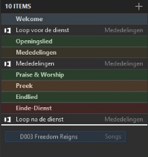
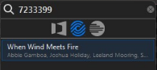
- Voer het unieke CCLI-nummer uit WorshipTools in om exact de juiste tekstversie op te zoeken.
-
Klik op het juiste lied in de zoekresultaten en klik vervolgens op de knop Import.
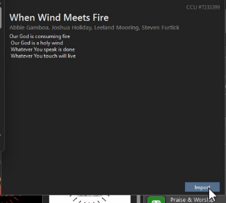
-
Er verschijnt een nieuw pop-up venster. Zorg er hier voor dat de Library ingesteld staat op Songs en dat bij Playlist je huidige playlist geselecteerd staat.

- Klik tot slot onderaan het venster nogmaals op Import om het lied definitief aan je setlist toe te voegen.
Het is verleidelijk om in de grafische editor te gaan prutsen — doe dat niet. Om de lay-out en structuur van liederen aan te passen, maken we gebruik van de Reflow Editor. Dit werkt veel sneller en behoudt onze vaste opmaak.
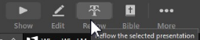
Wil je tekst verplaatsen naar een compleet nieuwe slide? Druk op Ctrl + Enter.
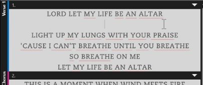
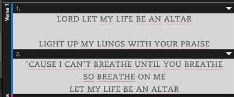
Hieronder zie je in het werkvlak hoe een correct bewerkt lied met de juiste regelverdeling eruit hoort te zien:
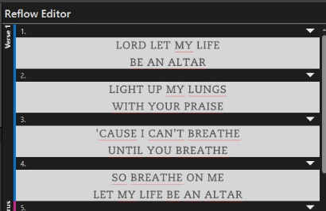
De mededelingen-presentatie is een dynamisch onderdeel van de dienst. Het is cruciaal dat deze elke week kritisch wordt nagelopen om te voorkomen dat er verouderde of foutieve informatie op de schermen verschijnt.
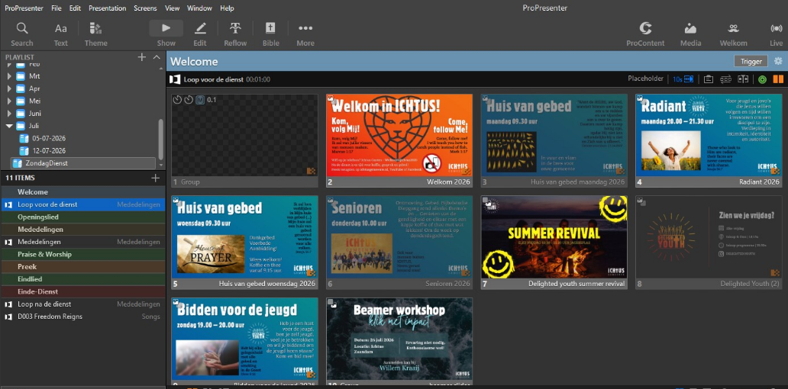
Besturing: Live de Dienst Draaien
Het live aansturen van een dienst draait om rust en overzicht. ProPresenter geeft je twee manieren om door de dienst heen te lopen: met de muis (voor het grove werk en navigatie) en met het toetsenbord (voor de strakke timing tijdens de liederen).
De muis is je belangrijkste tool om door de structuur van de dienst te navigeren. Het scherm is opgedeeld tussen je Playlist (de planning van de dienst aan de linkerkant) en het Slide-overzicht (de dia's van het geselecteerde item in het midden).
- Wisselen tussen items: In de linkerbalk (je Playlist) zie je het verloop van de dienst (bijv. Welkom → Lied 1 → Mededelingen → Preek). Klik op een item in deze lijst om alle bijbehorende slides in het centrale scherm te laden.
- Scrollen door slides: Gebruik het scrollwiel van je muis in het centrale slide-overzicht om door de slides van een specifiek lied of de preek te bladeren. Zo kun je alvast vooruitkijken wat er aan zit te komen.
Als een lied eenmaal is gestart, kun je de muis loslaten. Het toetsenbord werkt sneller, nauwkeuriger en voorkomt dat je per ongeluk op een verkeerde slide klikt. Leer jezelf direct deze basistoetsen aan:
Als de band afwijkt van de vaste volgorde, kun je met letters op je toetsenbord direct naar het juiste gedeelte van het lied springen:
Geavanceerd: Externe Controle & De Magie
In ProPresenter bepalen Macros hoe de schermen in de zaal en op de livestream eruitzien. Soms zie je in tutorials dat macros aan specifieke slides worden gekoppeld, maar dat vermijden wij. Macros blijven bij ons altijd in hun eigen balk (M-balk aan de rechterkant).
Het is jouw taak om handmatig door de dienst heen de juiste macro aan te klikken op het juiste moment.
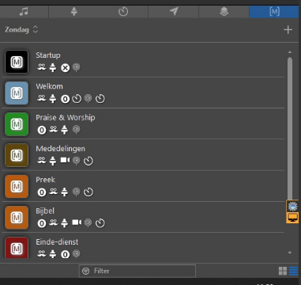
Hieronder vind je de macros die je in de rechterbalk ziet staan en wanneer je ze activeert:
Startup
Wanneer: Start automatisch zodra ProPresenter opstart.
Functie: Zet de basisinstellingen op de achtergrond direct goed. Hier hoef je live tijdens de dienst niets mee te doen.
Welkom
Wanneer: Moet minimaal een kwartier (15 minuten) voor aanvang van de dienst handmatig worden aangezet.
Functie: Zorgt ervoor dat de beelden en signalen alvast correct naar derden (zoals de livestream/videomixer) worden verzonden voordat we live gaan.
Praise & Worship
Wanneer: Activeer deze zodra de zangdienst begint en er liederen worden gezongen.
Functie: Schakelt de juiste achtergronden en tekstlay-outs in voor de aanbidding.
Mededelingen
Wanneer: Schakel hiernaar over op het moment dat de mededelingen op het scherm worden getoond.
Functie: Formatteert de schermen specifiek voor de mededelingenslides.
Preek
Wanneer: Gebruik deze bij de start van de preek voor het tonen van de presentatie (PowerPoint of slides van de spreker).
Bijbel
Wanneer: Is er geen presentatie, maar worden er wel live Bijbelteksten opgezocht en getoond? Gebruik dan deze macro.
Functie: Toont de losse Bijbelteksten in een beter, geoptimaliseerd format op de schermen.
Einde-dienst
Wanneer: Klik hierop direct nadat de dienst is afgelopen.
Functie: Sluit de live-lay-outs af en zorgt ervoor dat de mededelingen direct weer in een automatische loop (lus) gaan draaien voor de mensen in de zaal en de livestream.
Een Look bepaalt dat scherm A (bijv. Zaal) wél een achtergrond krijgt, maar scherm B (Livestream) niet. Zo zien verschillende outputs er anders uit — vanuit dezelfde slide.
In het Looks-venster (Screens → Edit Looks) kies je per scherm welke lagen zichtbaar zijn. Zo kun je bijvoorbeeld de tekst wél naar de zaal sturen, maar naar de livestream een alpha-kanaal (lower-thirds) zonder achtergrond.
ProPresenter kan ook op afstand worden aangestuurd. Dit is handig als de operator niet achter de computer staat, maar bijvoorbeeld bij de band of bij de camera staat.
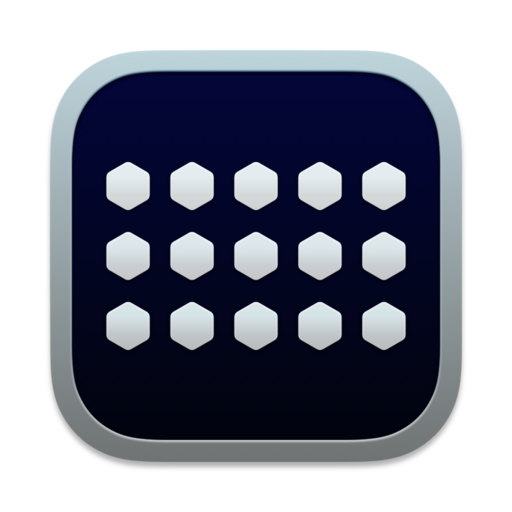

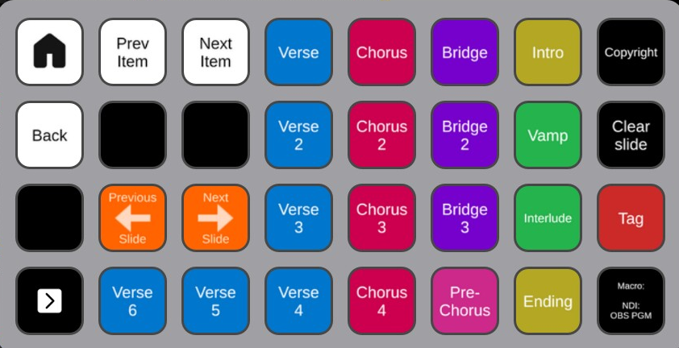